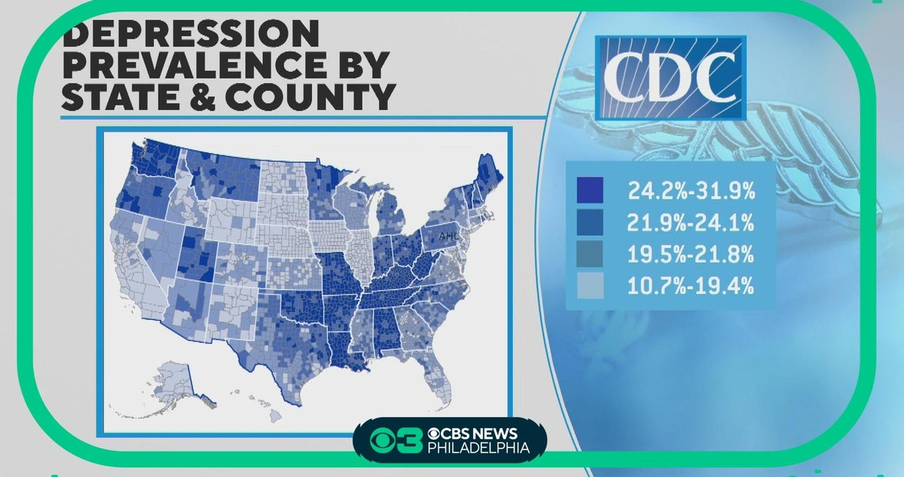
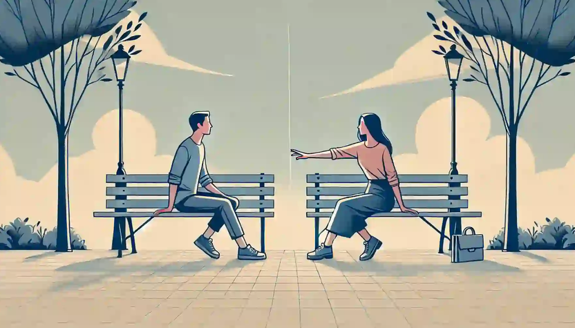

Is it just me, or is almost everyone really unhappy right now? Many people seem to be either very angry, or depressed. And while it may seem common, that does not mean that it should be normalized.
And I feel so strongly that there is a reason, and granted, I'm perhaps someone that lives in an ivory tower of some sort, and so I don't relate to everyone else and how they feel. But I have still observed humanity's decline in morale and it's crushing.
I do believe that a huge factor in this unhappiness is the economy. When people struggle to afford things, and even go into debt just to get by, then one would likely be angry at the situation they're in, or be depressed.
I've flirted with the idea that politics is another factor. A lot of people are angry at the state of things, and I know plenty of people whose human relationships crashed and burned because of political disputes.
And relative to politics is the hyper media that we all have, propped up by the internet accesible to us at all times. The media always displays the most imflammatory content to garner attention which either makes people angry....or can make some people feel depressed.
And when people are angry and unhappy, they look for something to blame. This is how propaganda can manipulate people, by first making them angry (PATHOS) and then providing narratives for people to follow while in their perpetually angered state.
I'm really just taking a guess, an educated guess on why people are unhappy. But I remember that at earlier times in my life, over a decade ago, people seemed to be happier or even kinder than they are now. And I feel that the biggest things that have changed between then and now are really 1.) The economy getting worse, 2.) Politics infesting the country, and 3.) The media being accesible to our pockets.
Yet even if I'm right, or partially right, this really seems to account more for anger than anything else.
Me and my friends have talked quite a bit about this issue, it's a fact that almost everyone has been depressed at some point, if they're not actively struggling right now.
And what we believe is that humans need purpose. And humans throughout history had tasks and other responsibilities to keep them busy and feeling fufilled. Modern capitalism and the 9-5 has made it go from "working for your own gain or your tribe" to "working for some guy who works for some guy that works for some guy and this system depends on it, and you'll own nothing btw."
We have a society that glorifies depression in music, visual artwork, films, and other aspects of media and culture. And while I respect art bringing to light the darkest aspects of human nature, it gets to a point where enough is enough.
I believe that humans were meant to live a certain way, and whatever way that is, we're not living it right now. Instead of being outside with others, we're inside alone. It's funny when people say they want us to live in pods, because bro we already do. Literally if you live in a little apartment in the city, or spiritually with our devices that capture us.
Speaking of spirituality, what about God? Does lack of faith cause depression? Or does depression cause a lack of faith? I honestly don't think that humans were supposed to question if there is or isn't a God or an afterlife.
For the sake of happiness I mean, I don't think it matters if there is an afterlife or not, we weren't supposed to go down that rabbit hole because depending on the person that hole can get dark. I think having a faith and community is deeply important for our needs, whether that faith is through something more sublime like religion, or another means of connecting with people.
People need to come together. The first step is acceptance, you need to accept you're unhappy, and then realize different things you do that could be negatively affecting your lifestyle.
What helped for me might help you. I think you should try using electronics less (so less social media), eating healthier, going to bed earlier and waking up earlier, exercising, and surround yourself around good people.
People need to come together, all that I ask is for y'all to care about one another.

Return to main page